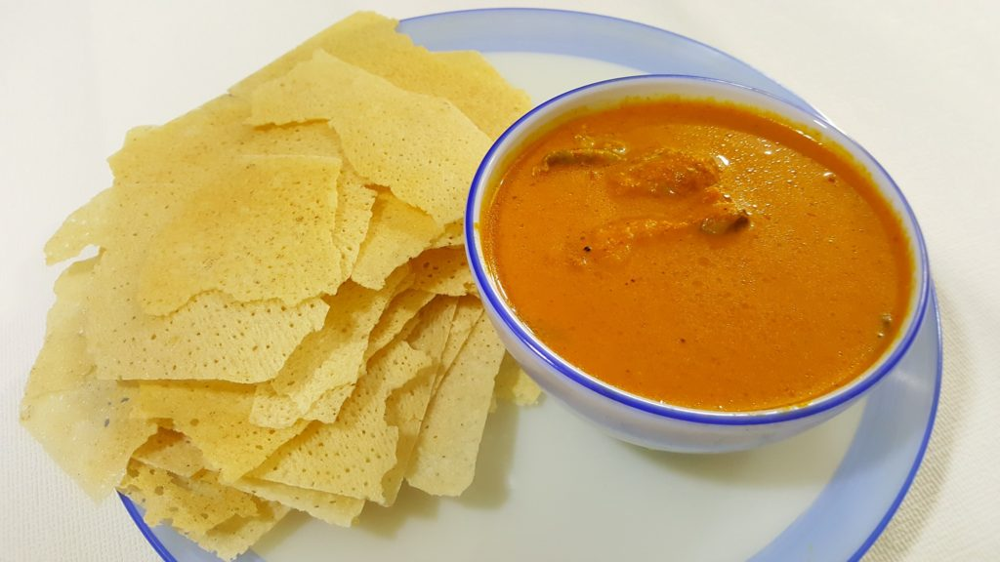
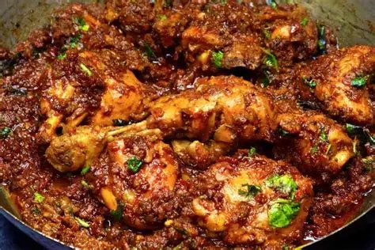
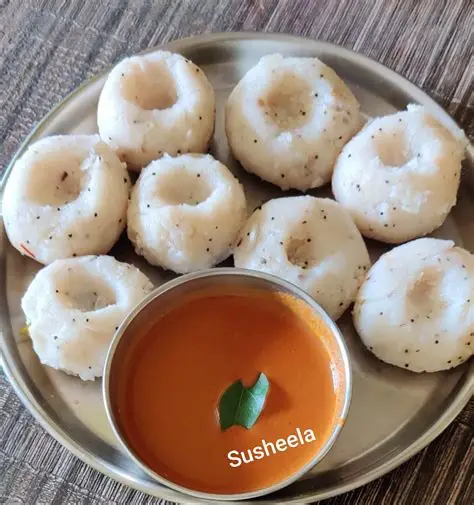
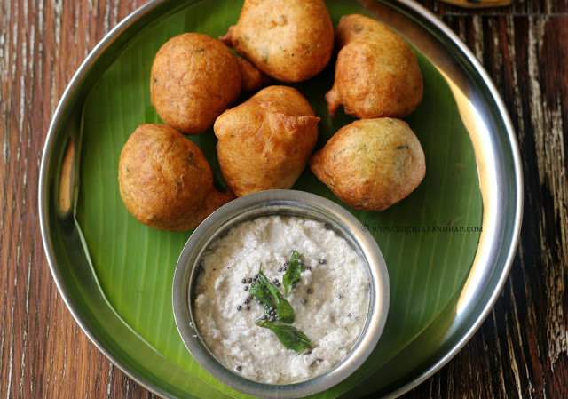
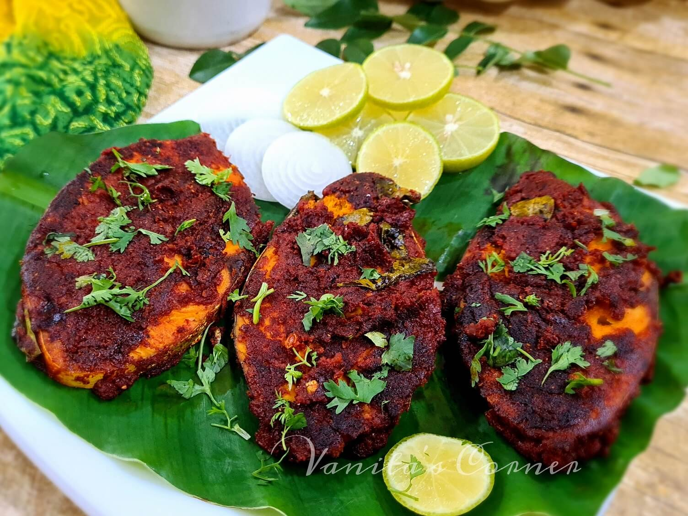
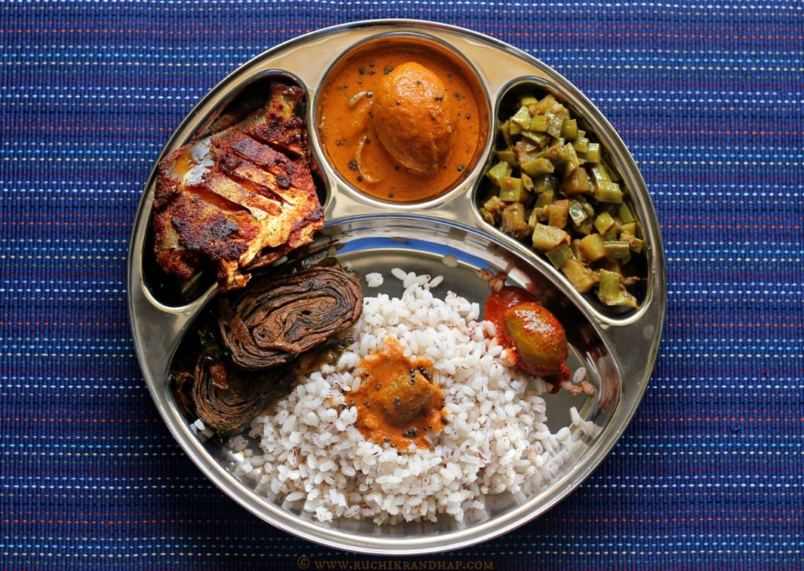
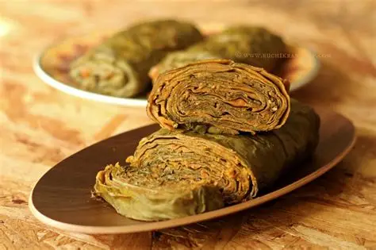
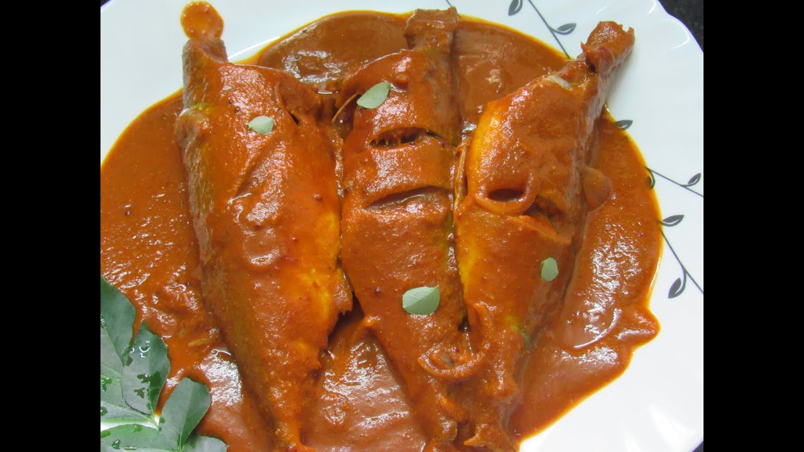
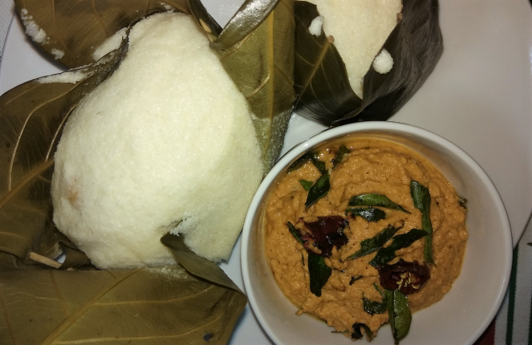
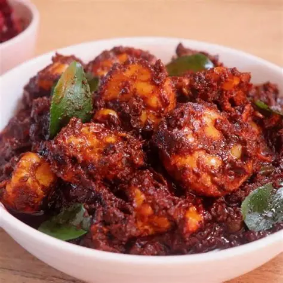

Popular Tulunadu Dishes
Neer Dosa
A soft, delicate rice dosa unique to Tulunadu.

Kori Rotti
Crispy dry rotti with spicy coconut chicken gravy.

Chicken Sukka
Chicken cooked with grated coconut & roasted spices.

Pundi (Rice Dumplings)
Soft steamed rice balls, served with coconut chutney.

Goli Baje
Crispy outside, soft inside—famous Tulunadu snack.

Seer Fish Fry
Fresh coastal fish marinated with Tulunadu masala.

Tulu Style Meal
Rice, sambar, curries, pickles and coastal flavours.

Pathrode
Steamed colocasia leaf rolls cooked with coconut spices.

Bangude Pulimunchi
Spicy & tangy Tulunadu-style mackerel curry.

Mangalore Buns
Sweet, soft banana puris — a famous Tulu snack.

Kotte Kadubu
Steamed idlis made in jackfruit leaf cups.

Prawn Ghee Roast
Prawns roasted in ghee, chilli & spices.